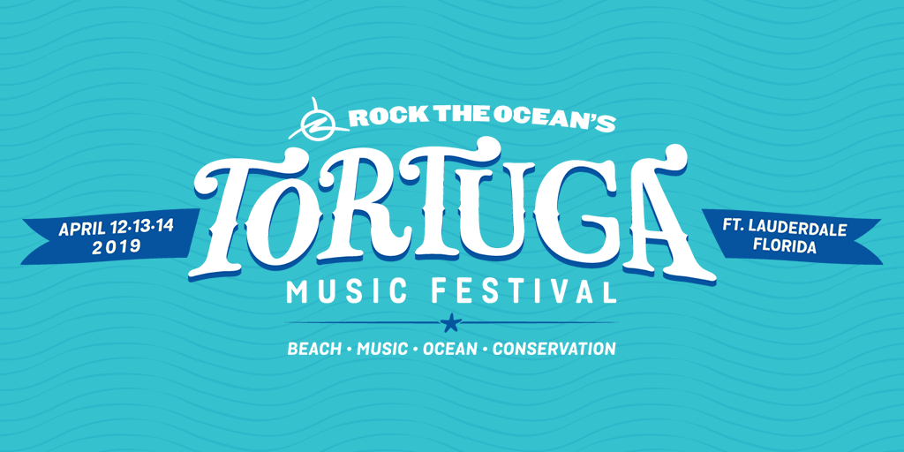

About The Author
My name is Janie Ziegler and I am a junior in the Information Communications and Technology major. I made this page to share some insight on one of the biggest country music festivals in the nation, the CMA Fest. My professional goal is to work in the entertainment industry (focusing in on the music aspect) as a publicist, manager or agent. Working in the music world has been a lifelong dream of mine and learning web design is the next step towards reaching my goal.
The author in New York City
References
Title: Rock The Ocean's Tortuga Music Festival
Title: Tortuga Music Festival Aims to Save the Sharks and Clean the Ocean
- https://www.miaminewtimes.com/music/tortuga-music-festival-focuses-on-ocean-conservation-10233786
- Author: Natalya Jones
- Publication: Miami New Times
- Date: April 5, 2018
Title: Tortuga Music Festival
Title: Tortuga Music Festival Day 1: It's 'a beautiful thing'
- />https://www.sun-sentinel.com/entertainment/music/tortuga-music-festival/sf-tortuga-music-festival-2018-day-1-review-20180406-story.html
- Author: Ben Crandall
- Publication: Sun Sentinel
- Date: April 7, 2018
Image References

Official 2019 Tortuga Music Festival Banner